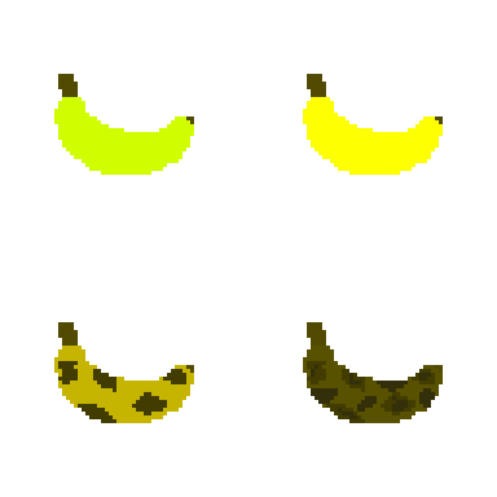

BananaEditor is a simple banana dress-up game. You can style your own personal banana with this tool that has many options! This was made for The Tool Jam 2 Game Jam. This version alone isn't finished, and I plan to update it in the distant future! Thank you!
-Evan Viele